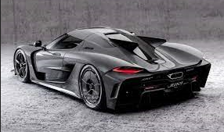

El auto mas veloz del mundo.
En el actual año 2025, el Koenigsegg Jesko Absolut es considerado el coche más rápido del mundo, alcanzando una velocidad máxima de 531 km/h.

Volver a la pagina principal:
Hogar